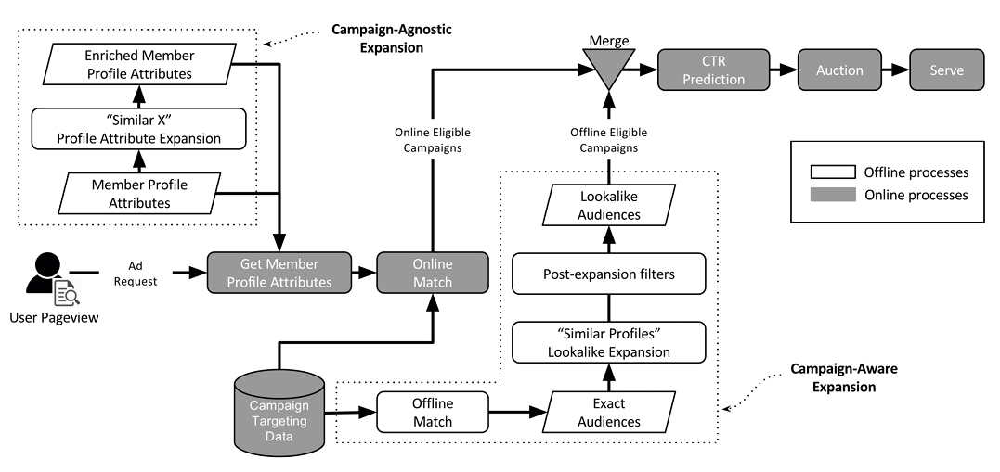

Defining the research question or objective: Clearly define the specific information you aim to gather through your research and explain why it is important to conduct the survey.
Designing the survey: Determine the most suitable survey method (e.g. online, telephone, mail, in-person) based on your target population. Develop well-crafted questions and provide appropriate response options to ensure accurate and meaningful data collection.
Selecting the sample: Choose a representative sample from the population you intend to survey. Consider factors such as demographics, geographical location, or specific criteria relevant to your research question.
Conducting the survey: Administer the survey to the selected sample using the chosen method. Ensure clear instructions are provided to respondents and consider any necessary ethical considerations, such as obtaining informed consent.
Collecting and analyzing the data: Collect the survey responses and organize the data in a structured manner. Analyze the data using appropriate statistical techniques or qualitative methods to draw meaningful conclusions and identify patterns or trends.
Reporting and acting on the findings: Share the survey results with relevant stakeholders, such as decision-makers or the general public. Use the insights gained from the survey to inform decision-making processes and take appropriate actions based on the findings.
Evaluating the survey process: Reflect on the survey process to identify any areas for improvement. Assess the reliability and accuracy of the survey results, considering factors such as response rate, sample representativeness, and potential sources of bias. Make adjustments to future surveys based on the evaluation to enhance the quality of data collection and analysis.
